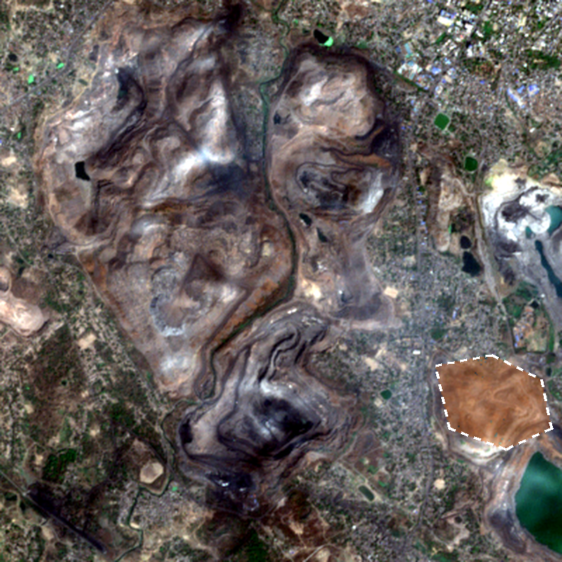
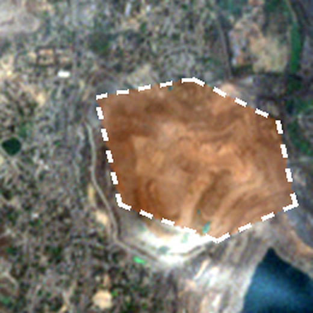
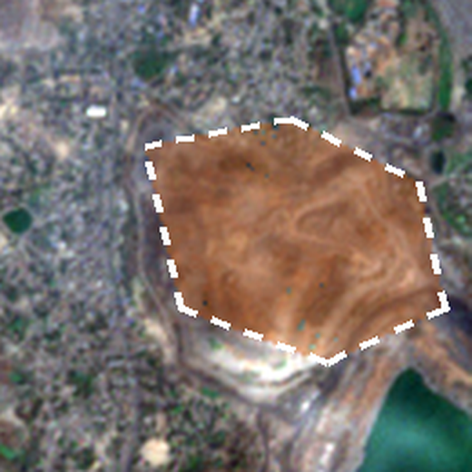

Satellite check: biological reclamation on the east OB dump
Star Rating item 18 and EC plantation condition · dump centre 23.758 N, 86.417 E, Jharia coalfield

N ↑
500 m
Area declared as reclaimed
Declared, but not green (NDVI below 0.30)
Declared, but not green (NDVI below 0.30)
Sentinel-2 L2A, 2 Mar 2026, 10 m pixels, cloud cover 0.0007%. Mine code and declared figure are demo data.
Mine declared, FY 2025-2612.0 ha reclaimed on this dump
Satellite, 2 Mar 20260.3 ha green out of 39.3 ha
Same day last year0.2 ha green
Mismatch: 11.7 ha not visible as vegetation
Review action A-2318 opened for the Environment Officer, due 15 Oct 2026. The next check runs on the first clear image after the monsoon.

2 Mar 2025 0.2 ha green

2 Mar 2026 0.3 ha green
How it is measured: NDVI from Sentinel-2 bands B4 and B8. A pixel counts as green when NDVI is 0.30 or more, which is the median of natural vegetation 3 km west in the same image.